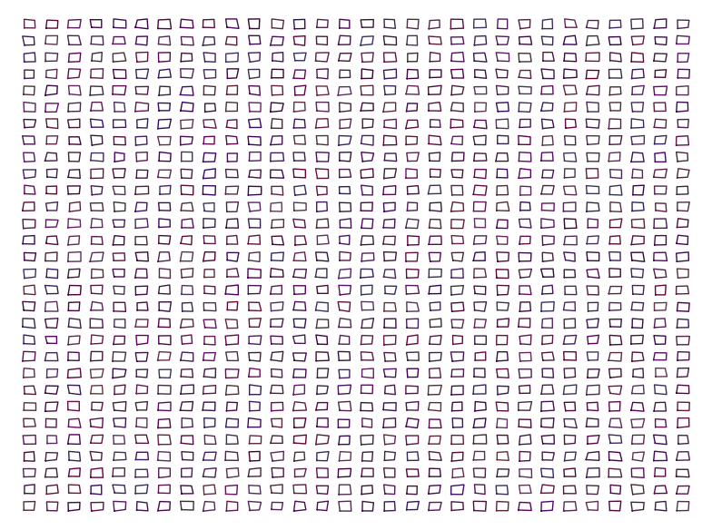

Interesting images using recurrences/iterations
Think of a simple figure. Now, think how it may look like if you repeat the same figure by placing it close to the original figure but smaller in size (e.g. by halving in size), and keep repeating.
Here are some snippets of code in Sage to use the idea using circles, experiment with it by changing the parameters/shape.

A saturn-like fractal

Another fractal using circles

A fractal eye
The below two are from Knuth's TAOCP vol 2 -- a little bit of randomness is good!
plt=Graphics() for a in range(-20,20,2): for b in range(-20,20,2): plt += line([(a,b),(a+1,b),(a+1,b+1),(a,b+1),(a,b)]) plt.show(frame=0,axes=0) |

Regular tiles

Slightly randomized tiles